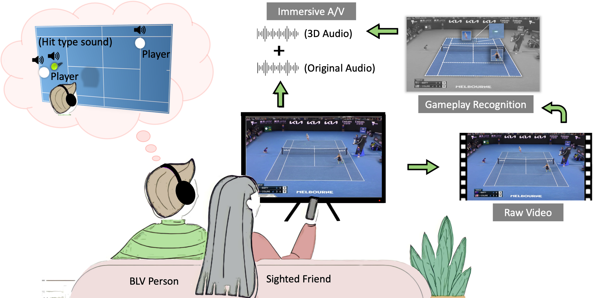

I am a third-year Ph.D. candidate in computer science at Columbia University, advised by Brian A. Smith in the Computer-Enabled Abilities Lab (CEAL).
Research Interests
Human-Computer Interaction (HCI), Human-AI Interaction, Accessibility, Computer Vision, and Deep Learning
Research Summary
I build human-AI systems that embed AI technologies (e.g., computer vision) into new human interactions to solve accessibility problems. My research focuses on designing, developing, and evaluating systems that enable blind and low-vision (BLV) people to experience the world with more agency.
Using my systems, BLV people can visualize the action in sports broadcasts for themselves rather than relying on other people’s descriptions. (CHI 2023, UIST 2023). To inform future systems, I also conduct qualitative studies to understand BLV users’ needs. My recent work proposes the concept of exploration assistance systems that grant BLV people the freedom and spontaneity to explore unfamiliar environments by themselves rather than being guided by turn-by-turn instructions (CSCW 2023).
Talks
-
[Feb '23] Guest lecture on "Effective Research Presentations" (Course Instructor: Brian A. Smith).
-
[Dec '22] Watching Videos Without Vision: Challenges, Techniques, and the Future of Video Accessibility.
Selected Publications
For an updated list of articles, please visit my Google Scholar Profile.
|

|
Towards Accessible Sports Broadcasts for Blind and Low-Vision ViewersCHI 2023 (Extended Abstracts) Paper Project Page Video Preview |

|
“I Want to Figure Things Out”: Supporting Exploration in Navigation for People with Visual ImpairmentsPaper Project Page |

|
Deep Neural Network Based Sinogram Super-resolution and Bandwidth Enhancement for Limited-data Photoacoustic TomographyIEEE Transactions on Ultrasonics, Ferroelectrics, and Frequency Control 2020 Paper Code |

|
Adaptive Weighted Graph Approach to Generate Multimodal Cancelable Biometric TemplatesIEEE Transactions on Information Forensics and Security 2020 Paper |

|
TransSketchNet: Attention-based Sketch Recognition Using TransformersECAI 2020 (Short Paper) Paper |
Contact Me
If you’re interested in my work and wish to discuss anything, feel free to email me (myfirstname [at] cs [dot] columbia [dot] edu)!